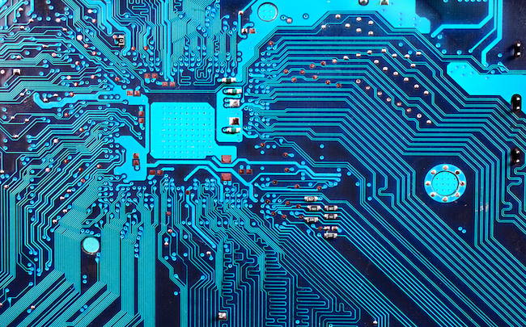

A cette époque, les hommes ont commencés à communiquer notamment grâce à l'art
rupestre. Le terme d'art rupestre qualifie des manifestations artistiques sur des supports rocheux.
Cette forme d'art est la seulemanifestation culturelle qui ai perduré pendant plus de 3000 ans sans
interruption.Pour les réalisés, les hommes préhistoriques avaient plusieurs techniques: - La gravure,
où les artistes martelaient le support rocheux avec une pierre dure. - La peinture: les artistes
utilisaient des poudres de couleur qui provenaient de minéraux broyés. La peinture
leurspermettaient de représenter les crinières, les poils et le pelages des animaux. Les peintures
rupestres pouvaient permettre de marqués un territoire d'habitation ou de chasse.De plus, sans parler
d'écriture, on peut déjà remarquer que nos ancêtres ont chercher à communiquer, à transmettre,
àtémoigner. Les grottes de Combarelles, de Font de Gaume et de Lascaux nous montre que l'homme
préhistorique a voulunous dire quelque chose, nous transmettre ses pensées, sa façon de voir le
monde et ce qu'il l'entoure.
Les soldats messagers de l'antiquité devaient parcourir de très grande distance pour informer la ville
dont ils venaient de cequ'il se passait lors de la bataille. D'après une légende un soldat messager du
nom de Philippidès, lors de la bataille deMarathon, a parcouru 42 km pour annoncer la victoire des
grecs sur les perses. Il parcourut cette distance en quatre heure çequi est fut. Cette légende est a
l'origine du nom et du principe du marathon moderne.Pendant la période de l'Antiquité, plus
précisement, -3500 grâce à l'invention de l'écriture les hommes ont put communiquerplus
facilement. L'invention de l'écriture permit l'aquisition et la transmission des connaisances.
Cependant, seuls lesscribes étaient formés à l'écriture, à la lecture et au calcul dans l'unique but de
retranscrires des transactions. Cependant àtravers les siècles, l'écriture s'est révélée un puissant
moyen de conserver les savoirs religieux, réglementaires et les savoirs-faire.Toutes ces
connaissances étaient stockées sur des supports en argile, en pierre ou en bois.
En 1915, le téléphone automatique fut crée et en 1917 Baudot crée un nouveau système
télégraphique. Le XX ème siècle va voir apparaître la radiodiffusion, la télévision, le radar, le télex
et le téléphone.
En 1968, Robert Elliot Kahn avec Vinton Cerf, invente internet. Il sert à nous informer plus
rapidement sur l’actualité, pour faire des recherches sur différents sujets.
Le smartphone, cet appareil tactile permet de prendre des photos, d’écouter de la musique, de
naviguer sur internet, d’envoyer des messages (sms et mes), de télécharger des applications (jeux ou
logiciels) et de téléphoner !
Le service de messagerie SMS, plus connu sous le sigle de SMS (pour « Short Message Service »)
ou les noms de « texto » ou de « minimessage », permet de transmettre de courts messages
textuels. C'est l'un des services de la téléphonie mobile (il a été introduit par la norme GSM).
Dans certaines régions du monde comme l’Amérique du Nord, le Royaume-Uni ou les Philippines,
on parle de « messagerie texte ». Par rétroacronymie, cette messagerie est également désignée par
« service de messages succincts ».
Le développement des moyens technologiques nous poussent toujours plus vers de nouveau style et
formats. Il est difficile aujourd’hui de savoir de quoi sera fait demain, mais avec l’émergence des
cryptomonnaie par exemple, qui vient créer un nouvel échange, ou encore des prototypes de google
glass qui ont été réalisés mais mis de côté lorsque la population s’est retrouvé offusqués de savoir
que les lunettes enregistrés en temps réel les informations qu’elles voyaient, et donc porter atteinte à
la vie privé.
Le plus grand défi sera pas forcement de savoir si les moyens technologiques seront assez
important, étant donné leurs développement exponentiel, mais plutôt de savoir si le commun des
mortels, acceptera ces nouvelles possibilités qui s’offrent à lui, sans chercher à comprendre
comment ces nouveaux moyens d’obtenir des informations se démocratisera dans le monde.
Lorsque nous voyons Elon Musk, via sa société neuralink, qui a pour but de créer une puce qui sera
introduite dans la tête d’un humain. Nous savons que l’évolution ne s’arrêtera jamais, mais les idées
et la façon de penser non plus.
L’avenir nous le dira…
APPLICATION
